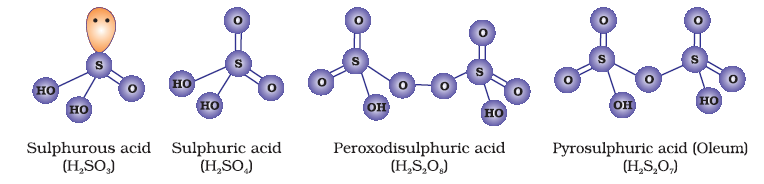

7.16 Oxoacids of Sulphur
Sulphur forms a number of oxoacids such as H2SO3, H2s2O3, H2s2O4, H2s2O5, H2SxO6 (x = 2 to 5), H2SO4, H2s2O7, H2SO5, H2s2O8 . Some of these acids are unstable and cannot be isolated. They are known in aqueous solution or in the form of their salts. Structures of some important oxoacids are shown in Fig. 7.6.

Fig. 7.6: Structures of some important oxoacids of sulphur